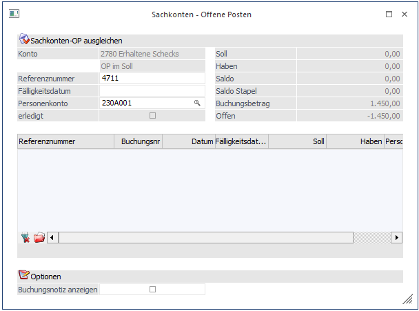
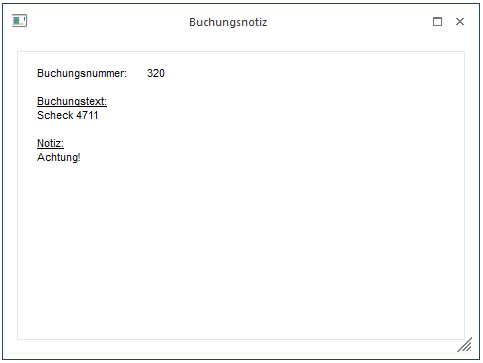

Bei jeder Buchungseingabe, bei der ein OP-Sachkonto angesprochen wird, wird eine eigene Referenznummer vergeben. Diese Referenznummer wird automatisch, ausgehend von der Belegnummer vorgeschlagen und muss daher nur mehr mit OK bestätigt werden (außer die Referenznummer soll absichtlich manuell abgeändert werden). Zusätzlich zur Referenznummer kann auch ein Personenkonto eingegeben werden. Wenn das gewünschte Personenkonto beim Buchen als Gegenkonto verwendet wurde, wird dieses nicht automatisch in das Feld in der Sachkonten-OP eingetragen, kann aber mit der F3-Taste übernommen werden.
Hinweis 1
Diese Automatik (F3-Taste) funktioniert allerdings nur bei einzeiligen Buchungen - nicht bei Splitbuchungen.
Anhand der Referenznummer wird nun bei jeder Buchung auf ein solches OP-Sachkonto geprüft, ob sich die Buchungen mit derselben Referenznummer saldieren oder nicht.
Zusätzlich zur Referenznummer kann auch nach einem Personenkonto selektiert werden.
Achtung
Pro Referenznummer gibt es nur ein Personenkonto. Wenn bei einer bestehenden Buchung das Personenkonto überschrieben wird, gilt diese Kontonummer auch für alle anderen Zeilen der Sachkonto-OP.
Ergibt der Saldo der Buchungen mit einer Referenznummer Null, schlägt das Programm automatisch vor, den Buchungsfall als "erledigt" zu kennzeichnen.

Es können aber durchaus auch mehrere Buchungszeilen einer Referenznummer angehören. Es könnte ja z.B. auch vorkommen, dass eine Buchung auf dem Verrechnungskonto nicht mit einer Gegenbuchung sondern mit mehreren Buchungen ausgeziffert werden soll. Erst wenn sich die Beträge im Soll und im Haben vollständig aufheben, schlägt das Programm vor, die Referenznummer als "erledigt" zu kennzeichnen.
Grundsätzlich wird immer nur die aktuell eingegebene Referenznummer, die sich aus der Belegart der Buchung ableitet, vorgeschlagen. Sollte es aber erforderlich sein, dass andere Referenznummern auch angezeigt werden sollen, so kann dies durch Anklicken des "Alle anzeigen"-Button erreicht werden.
Nach Eingabe einer Personenkontonummer, beim Ausgleich einer Sachkonten-OP, kann der Button "Alle OPs für das Personenkonto anzeigen" betätigt werden. Es werden alle Sachkonten-OPs für diese Kontonummer angezeigt. (Wird der Button verwendet, ohne ein Personenkonto einzugeben, werden alle Sachkonten-OPs ohne Personenkonto angezeigt.)
Hinweis 2
Gibt es mehrere Buchungen zu einer Referenznummer in einem Stapel, die alle dasselbe Kennzeichen haben, (OFFEN oder ERLEDIGT), wird die gesamte OP beim Buchen auf diesen Stapel gesetzt. (Dies gilt natürlich auch, wenn es nur eine Buchung zur Referenznummer im Stapel gibt.)
Gibt es im Stapel mehrere Buchungen zur selben Referenznummer mit unterschiedlichen Kennzeichen (teilweise OFFEN, teilweise ERLEDIGT), wird die OP nur dann auf "ERLEDIGT" gesetzt, wenn der Saldo der Buchung 0 ergibt.
Ø Buchungsnotiz anzeigen
Ist diese Checkbox aktiv, wird ein Fenster angezeigt, in dem die Buchungsnummer, Buchungstext und Buchungsnotiz der ausgewählten Faktura angezeigt wird.
